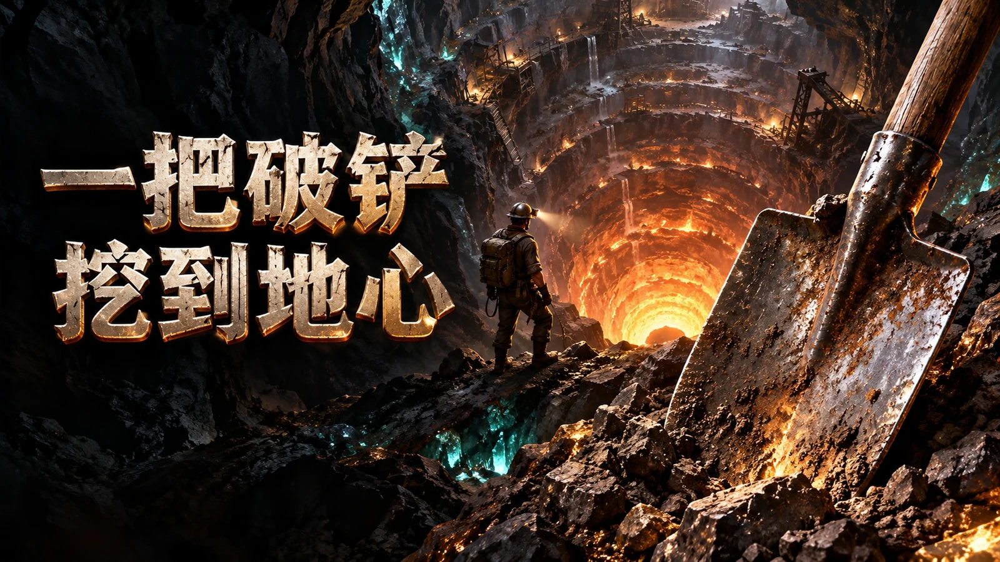
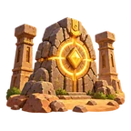

一把破铲：挖到地心

玩法特色
一铲开路，越挖越有故事。
敲开岩石、攒下资源、升级工具。再带上伙伴，看看下一层藏着什么。
九件合一
从旧工具，挖到黑洞装置。
集齐九件同级工具，合成下一阶。从手套、木勺、铁镐到电钻、激光与黑洞装置，35阶工具各有自己的出手方式。
35阶工具九件合一手动采掘选一条赋能路线
岩层太硬？换个打法。
熔火、雷霆、寒晶三条路线，各有三阶技能。搭配工具与伙伴，面对晶脉、遗迹和超硬地板，把每一次爆发用在关键处。
三条赋能路线主动技能伙伴协作
60章地心故事
越往下，越有蹊跷。
公元5286年，地表的水源即将耗尽。你和队友向地下寻找答案，在六十章故事中发现遗迹、挑战守路怪兽，逐步接近地心的秘密。
60章故事地下发现遗迹挑战真实游戏画面
看看这一铲，能挖出什么。
点击放大查看 · 左右滑动切换
截图与实机视频来自游戏开发版本，实际内容以当前游戏为准。首屏为主题宣传画。
一把破铲：挖到地心
带上你的第一把工具。
已在 TapTap 上线，前往游戏页面查看详情与可用版本。